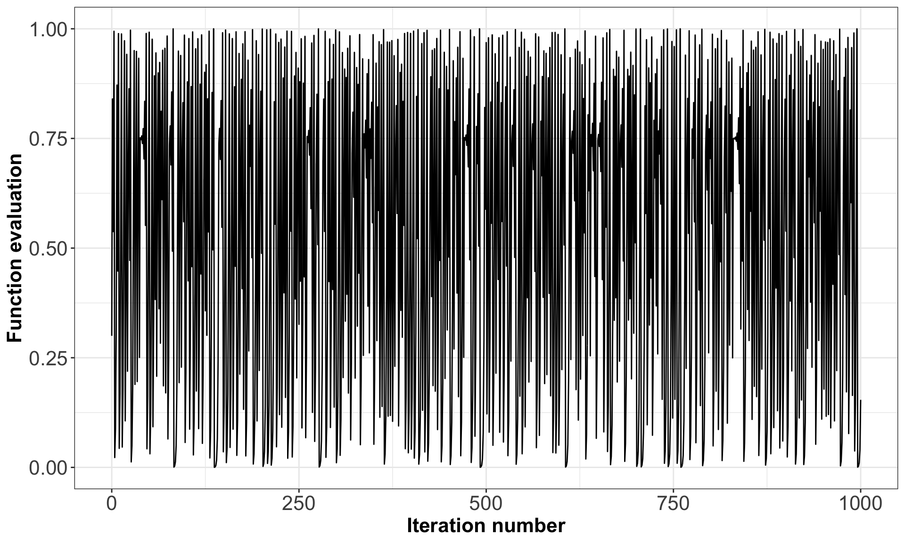
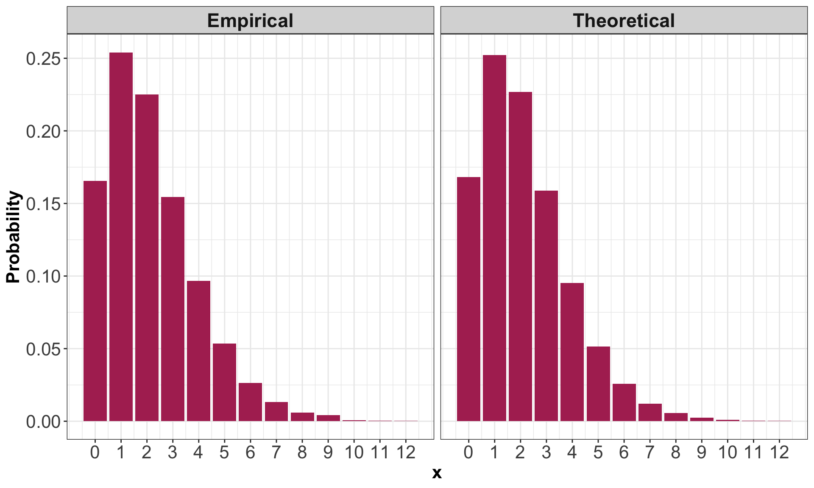
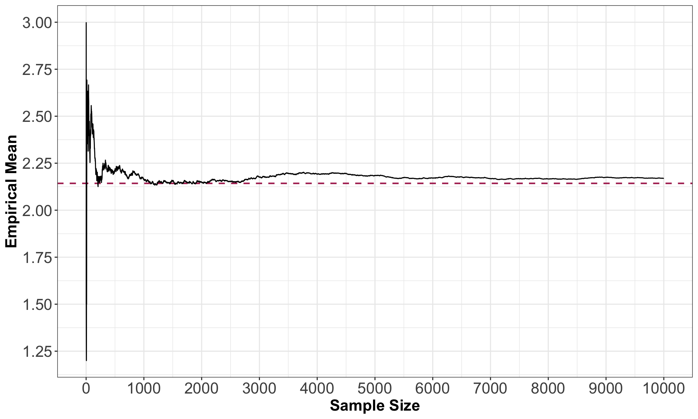
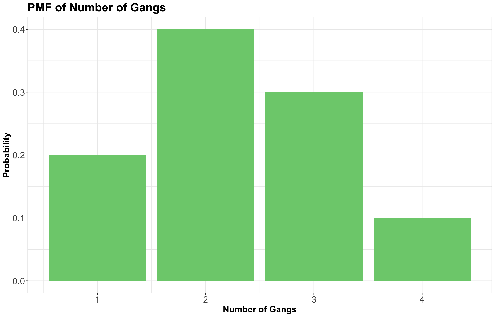

Lecture 8: Simulation
1 Slides
2 Learning Goals
By the end of this lecture, you should be able to:
- Generate a random sample from a discrete distribution in both
RandPython. - Reproduce the same random sample each time you re-run your code in either
RorPythonby setting the seed or random state. - Evaluate whether or not a set of observations are independent and identically distributed (iid).
- Use simulation to approximate distribution properties (e.g., mean and variance) using empirical quantities, especially for random variables involving multiple other random variables.
- Argue why simulations can approximate true properties of a stochastic quantity.
Important
So far, we have seen many quantities that help us communicate an uncertain outcome:
- Probability.
- Probability mass function.
- Odds.
- Mode.
- Entropy.
- Mean.
- Variance/standard deviation.
Sometimes, it is not easy to compute these quantities in a given random process, system, or population of interest. We might have different random variables interacting, which poses challenges in the corresponding process of estimation. Therefore, in these situations, we can use simulation to approximate these and other quantities. This is today’s topic. The notes will illustrate how to run basic simulations using either R or Python.
3 Review on Random Samples
From lecture7 on maximum likelihood estimation, we know that a random sample is a collection of random outcomes/variables. Using mathematical notation, a random sample of size \(n\) is usually depicted as \(X_1, \ldots, X_n\). We think of data as being part of a random sample.
Some examples of random samples are listed as follows:
- The first five items you get in a game of Mario Kart (\(n = 5\)).
- The outcomes of ten dice rolls (\(n = 10\)).
- The daily high temperature in Vancouver for each day of the year (\(n = 365\)).
Also, recall that unless we make additional sampling assumptions, a default random sample is said to be independent and identically distributed (or iid) if:
- Each pair of observations are independent, and
- each observation comes from the same distribution.
Sometimes, when an outcome is said to be random, this can either mean the outcome has some distribution (with non-zero entropy) or the distribution with maximum entropy. To avoid confusion, the word stochastic refers to the former (as having some uncertain outcome). For example, if a die is weighted so that “1” appears very often, would you call this die “random”? Whether or not you do, it is always stochastic.
The opposite of stochastic is deterministic: an outcome that will be known with 100% certainty.
4 Seeds
Computers cannot actually generate truly random outcomes. Instead, they use something called pseudorandom numbers. As an example of a basic algorithm that produces pseudo-random numbers between 0 and 1, consider starting with your choice of number \(x_0\) between \(0\) and \(1\), and iterating the following equation:
\[ x_{i+1} = 4 x_i (1 - x_i). \]
The result will appear to be random numbers between \(0\) and \(1\). For example, Figure 1 shows the resulting sequence when we start with \(x_0 = 0.3\) and iterate 1000 times.
Although this sequence is deterministic, it behaves like a random sample. But not entirely! All pseudorandom number generators have some pitfalls. In the case above, one pitfall is that neighbouring pairs are not independent of each other (by definition, of the way the sequence was set up!). However, some sophisticated algorithms produce outcomes that more closely resemble a random sample, so most of the time, we do not have to worry about the sample not being truly random.
Definition of Seed
The seed (or random state) in a pseudo-random number generator is some pre-specified initial value that determines the generated sequence.
As long as the seed remains the same, the resulting sample will also be the same. In the case above, this is \(x_0 = 0.3\). In R and Python, if we do not explicitly set the seed, then the seed will be chosen for us.
In R, we can set the seed using the set.seed() function, and in Python, using the numpy.random.seed() function from numpy.
Important
The seed gives us an added advantage over truly random numbers: it allows our analysis to be reproducible! If we explicitly set a seed, then someone who re-runs the analysis will get the same results.
5 Generating Random Samples: Code
We will look at some R and Python functions that help us generate a random sample. Note we are still focusing on discrete distributions here.
5.1 From Finite Number of Categories
In R, we can generate a random sample from a discrete distribution with a finite number of outcomes using the sample() function. It works as follows:
- Put the outcomes as a vector in the first argument,
x. - Put the desired sample size in the argument
size. - Put
replace = TRUEso that sampling can happen with replacement. - Put the probabilities of the outcomes as a vector respective to
xin the argumentprob.
Important
If these probabilities do not add up to 1, R will not throw an error. Instead, R automatically adjusts the probabilities so that they add up to 1.
Below, there is an R example of generating \(n = 10\) items using the Mario Kart item distribution from lecture1. Notice that the seed is set so that every time these lecture notes are rendered, the same results are obtained.
Important
All the coding cells below in R and Python are interactive; feel free to play around with the code. Then, click on the button Run Code to execute any new code input. The button Start Over resets the cell to the original code.
In Python, we can generate a random sample from a discrete distribution using the numpy.random.choice() function. It works as follows:
- Put the outcomes in the first argument,
a. - Put the desired sample size in the argument
size. - Put the probabilities of the outcomes respective to
xin the argumentp.
Using the Mario Kart example again, we have the following:
Important
In numpy.random.choice(), it is necessary that the probabilities in prob add up to 1.
Moreover, note that both R and Python have their own algorithms to generate pseudorandom outcomes, even though we provide the same seed.
5.2 From Distribution Families
In R, we can generate data from a distribution belonging to some parametric family using the rdist() function, where “dist” is replaced with a short form of the distribution family’s name. We can access the corresponding probability mass function (PMF) or probability distribution function (PDF) with ddist().
In Python, we can use the stats module from the scipy library.
Table 1 summarizes the functions related to some of the discrete distribution families we have seen. Note we use the package scipy.stats for the Python functions.
R and Python.
| Family | R Function |
Python Function |
|---|---|---|
| Binomial | rbinom() |
scipy.stats.binom.rvs() |
| Geometric | rgeom() |
scipy.stats.geom.rvs() |
| Negative Binomial | rnbinom() |
scipy.stats.nbinom.rvs() |
| Poisson | rpois() |
scipy.stats.poisson.rvs() |
The corresponding functions for continuous random variables can be found in lecture6.
We can use these functions as follows:
- Sample size \(n\):
- For
R, put this in the argumentn, which comes first. - For
Python, put this in the argumentsize, which comes last.
- For
- In both languages, each parameter has its own argument. Sometimes, like in
R’srnbinom(), there are more parameters than needed, giving the option of different parametrizations. Be sure only to specify the exact number of parameters required to isolate a member of the distribution family!
Let us start with a Binomial exercise. We will obtain \(n = 10\) random numbers from a Binomial distribution with probability of success \(p = 0.6\) and 5 trials.
Important
Let us not confuse the random sample size \(n\) (i.e., the number of Binomial random numbers in our sample, such as n in the R function) with the number of trials \(n\) as a parameter of the standalone Binomial random variable (i.e., size in rbinom()).
For Python, the Binomial parameter \(n\) is actually depicted as n and size is the number of Binomial random numbers in our sample.
R function rbinom() generates these random numbers. In this case, the argument prob refers to \(p\) and n for the desired amount of random numbers. The parameter \(n\) of the Binomial distribution is referred to as size.
On the other hand, Python uses the argument p for \(p\) and size for the desired amount of random numbers. The parameter \(n\) of the Binomial distribution is referred to as n.
Note that this is a particularly confusing example because size in the R code means the parameter \(n\) of the Binomial distribution, whereas size in the Python code means the number of random samples, also known as the sample size, that you want it to generate.
Let us proceed with a Negative Binomial example. The Negative Binomial family is an example of a function in R that allows different parametrizations. Suppose the following:
\[X \sim \text{Negative Binomial} (k, p),\]
where \(X\) refers to the number of failures in independent successive Bernoulli trials before experiencing \(k\) successes with probability \(p\).
R function rnbinom() generates n Negative Binomial-distributed random numbers with arguments size as \(k = 5\) and prob as \(p = 0.6\):
Now let us check a second case using rnbinom(). Recall the expected value is
\[\mu = \mathbb{E}(X) = \frac{k(1 - p)}{p} = \frac{5(1 - 0.6)}{0.6} = 3.33.\]
From lecture2 on parametric families, we know that a distribution can also be parametrized with its corresponding mean. For a Negative Binomial-distributed random number, the argument mu in rnbinom() refers to the expected value \(\mu\) from above. Hence, we either use prob or mu in the rnbinom() function. If we want to use mu, then we will need to provide the following:
We get the same random numbers via the same seed!
Exercise 37
Suppose you want to simulate hourly bank branch queues of customers. Historically, hourly queues show an average of 10 people.
What distribution (including parametrization) and R random number generator will you use to simulate 20 random numbers?
Select the correct option:
A. \(\text{Poisson}(\lambda = 1/10)\) with rpois(n = 20, lambda = 1 / 10)
B. \(\text{Binomial}(n = 10, p = 1/10)\) with rbinom(n = 20, size = 10, prob = 1 / 10)
C. \(\text{Poisson}(\lambda = 10)\) with rpois(n = 20, lambda = 10)
D. \(\text{Geometric}(p = 1/10)\) with rgeom(n = 20, prob = 1 / 10)
Exercise 38
During a random foodie tour, suppose you want to simulate the number of non-authentic Mexican restaurants you will try before encountering your very first authentic one in Vancouver. Overall, it is known that 70% of Mexican restaurants in Vancouver are considered non-authentic (but you do not have access to this list!).
What distribution (including parametrization) and R random number generator will you use to simulate 15 random numbers?
Select the correct option:
A. \(\text{Binomial}(n = 15, p = 0.7)\) with rbinom(n = 15, size = 15, prob = 0.7)
B. \(\text{Geometric}(p = 0.3)\) with rgeom(n = 15, prob = 0.3)
C. \(\text{Binomial}(n = 15, p = 0.3)\) with rbinom(n = 15, size = 15, prob = 0.3)
D. \(\text{Geometric}(p = 0.7)\) with rgeom(n = 15, prob = 0.7)
6 Running Simulations
So far, we have seen two ways to calculate quantities that help us communicate uncertainty (like means and probabilities):
- The distribution-based approach (using the distribution), resulting in true values.
- The empirical approach (using observed data), resulting in approximate values that improve as the sample size increases (i.e., the frequentist paradigm!).
For example, the true mean of a discrete random variable \(X\) can be calculated as
\[\mathbb{E}(X) = \sum_x x \cdot P(X = x),\]
using each pair of outcome and outcome’s probability, or can be approximated using the empirical approach from a random sample \(X_1, \ldots, X_n\) by
\[\mathbb{E}(X) \approx \frac{1}{n} \sum_{i=1}^n X_i.\]
This means that we can approximate these quantities by generating a sample! An analysis that uses a randomly generated data set is called a simulation.
6.1 Code for Empirical Quantities
Here are some hints for calculating empirical quantities using R functions for your reference. We will be going over these below in the next section:
mean()calculates the sample average
\[\bar{X} = \frac{1}{n} \sum_{i=1}^n X_i.\]
var()calculates the sample variance (the \(n - 1\) version, not \(n\))
\[S^2 = \frac{1}{n-1} \sum_{i=1}^n (X_i - \bar{X})^2.\]
sd()is the square root of the sample variance, i.e., the standard deviation.quantile()calculates the empirical \(p\)-quantile, which is the \(np\)’th largest (rounded up) observation in a sample of size \(n\).- For a single probability, remember that a mean is just an average. Just calculate the mean of a condition.
- For an entire PMF, use the
table()function, or more conveniently, thejanitor::tabyl()function (from the{janitor}Rpackage). - For the mode, either get it manually using the
table()orjanitor::tabyl()function, or you can useDescTools::Mode().
6.2 Basic Simulation
In Mexico City, consider a random person dating via some given app with a probability of having a successful date of \(0.7\). Suppose we want to evaluate the success of this given app via the number of failed dates before they experience \(5\) successful dates.
We can translate the above inquiry as a random variable denoting failed dates has a Negative Binomial distribution:
\[ \begin{gather*} X = \text{Number of failed dates before experiencing 5 successful ones} \\ \\ X \sim \text{Negative Binomial} (k = 5, p = 0.7) \quad \text{for } x = 0, 1, 2, ... \end{gather*} \]
Let us demonstrate both a distribution-based and empirical approach to compute the variance and PMF. First, let us obtain our R-based random sample (of, say, \(n = 10000\) observations).
6.2.1 Mean
Theoretically, the mean of \(X\) is
\[ \mathbb{E}(X) = \frac{k(1 - p)}{p}. \]
We compute it as follows:
Empirically, we can approximate \(\mathbb{E}(X)\) with the mean of the values in random_sample:
Note the above empirical value is quite close to the theoretical one!
6.2.2 Variance
Theoretically, the variance of \(X\) is
\[ \text{Var}(X) = \frac{k(1 - p)}{p^2}. \]
We compute it as follows:
Empirically, we can approximate \(\text{Var}(X)\) with the sample variance of the values in random_sample:
Note the above empirical value is quite close to the theoretical one!
6.2.3 Standard deviation
Theoretically, the standard deviation of \(X\) is
\[ \text{sd}(X) = \sqrt{\frac{k(1 - p)}{p^2}}. \]
We compute it as follows:
Empirically, we can approximate \(\text{sd}(X)\) with the sample standard deviation of the values in random_sample:
Note the above empirical value is quite close to the theoretical one!
6.2.4 Probability of Seeing 0 Failures (i.e., 0 failed dates!)
Theoretically, this probability can be computed as
\[ P(X = 0 \mid k, p) = {k - 1 \choose 0} p^k (1 - p)^x. \]
We can automatically compute this probability via the density function dnbinom() as follows:
Empirically, we can approximate \(P(X = 0 \mid k, p)\) by counting the number of random numbers equal to \(0\) in random_sample and dividing this count over the sample size \(n = 10000\). We can quickly do this via logical values as follows:
6.2.5 Probability Mass Function
Just as we did it with \(P(X = 0 \mid k, p)\), we can also do it for \(P(X = i \mid k, p)\) with \(i = 1, 2, \dots\) (i.e., the whole PMF!). Nonetheless, let us use functions from tidyverse and tabyl() from janitor. We will create a table containing columns for both approaches: theoretical (using dnbinom()) and empirical (using random_sample).
Note that both probability columns are similar!
Now, we can also plot both PMFs as in Figure 3.

6.2.6 Mode
Recall the mode is the outcome of the random variable with the largest probability. From our previous plots, we can see that the mode is \(X = 1\). We can confirm this as follows:
6.2.7 Law of Large Numbers
The Law of Large of Numbers states that, as we increase our sample size \(n\), our empirical mean converges to the true mean we want to estimate. That is, as we increase our \(n\), our sample average \(\bar{X}\) converges to the true mean \(\mu\).
To demonstrate that a larger sample size improves the approximation of the empirical mean, let us see how this sample average changes as we collect more and more data. Given that
\[ X \sim \text{Negative Binomial} (k = 5, p = 0.7), \]
with
\[\mathbb{E}(X) = \frac{k(1 - p)}{p} = 2.14.\]
The plot below shows that, as we increase our sample size \(n\) of simulated random numbers, their corresponding empirical mean (i.e., sample average) converges to the \(\mathbb{E}(X) = 2.14\) (horizontal dashed line) depicted as a red line.

7 Multi-Step Simulations
The simulation above was not all that useful, since we could calculate basically anything (theoretically speaking!). It gets more interesting when we want to calculate things for a random variable that transforms and/or combines multiple random variables.
The idea is that some random variables will have a distribution that depends on other random variables but in a way that is explicit. For example, consider a random variable \(T\) that we can obtain as follows:
\[ X \sim \text{Poisson}(\lambda = 5), \]
and then
\[ T = \sum_{i = 1}^{X} D_i, \]
where each \(D_i\) are iid with some specified distribution. In this case, to generate \(T\), you would first need to generate \(X\), then generate \(X\) values of \(D_i\), then sum those up to get \(T\). This is the example we will see here, but in general, you can have any number of dependencies, each component of which you would have to generate.

Consider an example that a Vancouver port faces with gang demand. Whenever a ship arrives to the port of Vancouver, they request a certain number of gangs (groups of people) to help unload the ship. Let us suppose the number of gangs requested by a ship has the discrete distribution (i.e., a PMF) from Figure 6.

The following function sums up simulated gangs requested by a certain number of ships. The default PMF in this function is the one above.
As an example, let us check out the simulated grand total gang request from 10 ships:
Suppose the number of ships arriving on a given day follows the Poisson distribution with a mean of \(\lambda = 5 \text{ ships}\). Now, this is our main statistical inquiry: what is the distribution of total gang requests on a given day?
Let us simulate the process to find out:
- Generate arrival quantities for \(n\) days from the \(\text{Poisson}(\lambda = 5 \text{ ships})\) distribution.
- For each day, simulate the grand total gang request for the simulated number of ships.
- You now have your random sample of size \(n\); compute things as you normally would.
We will try this by obtaining a sample of \(n = 10000\) days:
From our 10,000 replicates, the summary statistics above indicate that we typically expect a demand of approximately 11.5 gangs on a given day in the whole port.
Nonetheless, our distribution is slightly right-skewed, meaning that gang demand leans towards less than this mean. We can check it out by plotting our simulation results stored in total_requests (mean gang request is indicated as a solid vertical blue line):
8 Summary
In this lecture, we covered:
Random samples and seeds: Understanding how computers generate pseudorandom numbers and the importance of setting seeds for reproducibility.
Generating random samples: Using
RandPythonfunctions to generate samples from discrete distributions, both from finite categories and from parametric distribution families.Basic simulations: Using simulation to approximate distribution properties like mean, variance, and probability mass functions, and comparing empirical results with theoretical values.
Law of Large Numbers: Demonstrating how empirical estimates converge to true values as sample size increases.
Multi-step simulations: Handling complex scenarios where random variables depend on other random variables, illustrated through the port gang demand example.
The key insight is that simulation provides a powerful tool for understanding complex stochastic processes, especially when analytical solutions are difficult or impossible to obtain. By generating large samples and computing empirical quantities, we can approximate true distributional properties with high accuracy.